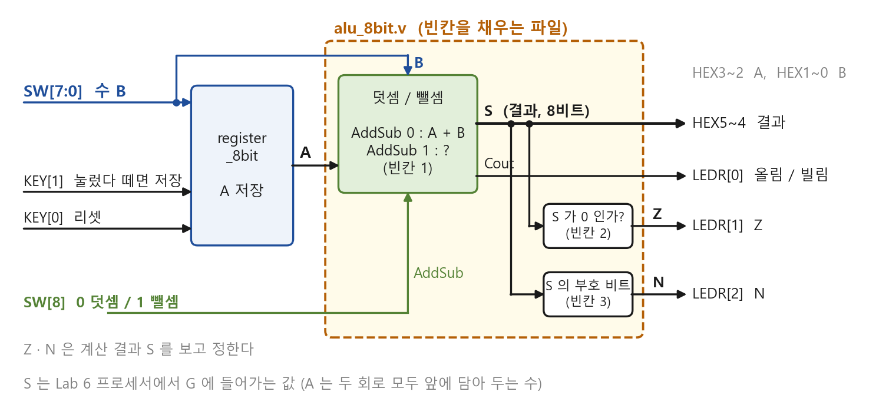

수업·시뮬레이터 › FPGA 설계 › 2026-2 Lab 6 ›
Part0 ⓶ 「내 계산기에 뺄셈과 Z·N 달기」 (약 25분)
실습 파일 받기 (zip) .v 파일 6개, 빈칸이 있는 판
Part0 : 조합회로와 순차회로 짚고 가기 · ⓶ 조합회로 (덧셈 · 뺄셈과 Z · N), ⓷ 순차회로 (단계를 세는 FSM)
Lab 3 Part5 「두 숫자 계산기」에 뺄셈과 플래그 Z, N 을 단다. Lab 6 프로세서의 add / sub 와 Z, N 이 바로 이 회로다.
파일
| 파일 | 하는 일 | 고칠 곳 |
|---|---|---|
warm_alu.v |
top (Lab 3 part5.v 에서 adder_8bit 자리에 alu_8bit) | 없음 |
alu_8bit.v |
덧셈·뺄셈 + Z, N | 빈칸 ? ? ? 세 곳 |
register_8bit.v, d_ff.v |
Lab 3 의 8비트 레지스터 (A 저장) | 없음 |
hex_dec.v |
4비트 → 7-세그먼트 숫자 | 없음 |
tb_alu.v |
ModelSim 테스트벤치 | 없음 |
빈칸
- 빈칸 1 : 뺄셈일 때의
{Cout, S} - 빈칸 2 :
Z= 결과가 0인가 - 빈칸 3 :
N= 결과가 음수인가 (어느 비트를 보면 되는가)
블록도 (보면서 빈칸을 채운다)

하는 순서 (ModelSim 으로 먼저 확인하고 Quartus 로)
- 실습 파일
warm_alu.zip을 받아 압축을 풀면warm_alu폴더가 생긴다. 이 폴더를C:\FPGA\lab6으로 옮긴다 (팀즈 학습 자료 › labs › lab6 › warm_alu 의 파일을C:\FPGA\lab6\warm_alu에 넣어도 된다) - ModelSim 에서 빈칸
? ? ?을 채우고 확인한다 (아래) - Quartus 로 보드에 올린다 (아래)
ModelSim 으로 확인
한글 주석이 「ë§ì」 처럼 깨져 보이면 Transcript 창에
set PrefSource(encoding) utf-8을 입력하고 파일을 닫았다가 다시 연다. (ModelSim 은 파일을 서유럽 글자로 읽는다. 코드는 그대로라 컴파일에는 영향이 없다)
- File > New > Project : Project Name
warm_alu, Project LocationC:/FPGA/lab6/warm_alu, Default Library Namework - Add Existing File : 폴더의
.v파일 여섯 개 모두tb_alu.v warm_alu.v alu_8bit.v register_8bit.v d_ff.v hex_dec.v - 빈칸 채우기 : Project 창에서
alu_8bit.v를 더블클릭해 열고, 위 블록도를 보며? ? ?세 곳을 고친 뒤Ctrl+S로 저장 - Compile > Compile All (모두 초록 체크인지 본다)
- 빈칸을 채우지 않았으면
alu_8bit.v가 오류 3개 (빈칸 세 곳)로 실패한다 → 빈칸부터 채운다
- 빈칸을 채우지 않았으면
- Simulate > Start Simulation →
work안의tb_alu→ OK - 파형에 넣을 신호 고르기 : 왼쪽
sim창에서tb_alu▸dut▸u1을 클릭하면, Objects 창에 alu_8bit 의A B AddSub S Cout Z N이 나온다 → 모두 선택 (Ctrl+A) → 오른쪽 클릭 › Add WaveS는 warm_alu 의 바깥 포트(SW · KEY · LEDR · HEX)가 아니라 안쪽 선이라,tb_alu만 클릭해서는 보이지 않는다. 안쪽 블록u1을 클릭해야 나온다
- Radix 바꾸기 : Wave 창에서 신호를 고르고 오른쪽 클릭 › Radix
A,B→ Unsigned : 13, 4 처럼 보통 10진수S→ Decimal : 부호 있는 10진수라 3 − 5 의 결과FE가 −2 로 보인다 (Transcript 의 expect 와 맞춰 볼 때는 Hexadecimal)
- Transcript 창에
run -all→ Wave 창을 클릭하고F키 (Zoom Full) 로 전체를 본다
6 · 7 번을 Transcript 에 붙여 넣어 한 번에 해도 된다.
add wave -radix unsigned /tb_alu/dut/u1/A /tb_alu/dut/u1/B
add wave /tb_alu/dut/u1/AddSub
add wave -radix decimal /tb_alu/dut/u1/S
add wave /tb_alu/dut/u1/Cout /tb_alu/dut/u1/Z /tb_alu/dut/u1/N
Wave 에서 Transcript 줄이 찍히는 네 순간의 S 가 9, −2, 0, 19 인지, −2 일 때 N, 0 일 때 Z 가 1 인지 본다. (그 사이에는 스위치와 KEY 를 바꾸는 중이라 다른 값도 잠깐 나온다)
Transcript 에 네 줄이 나온다. 각 줄의 S, Z, N 이 뒤 괄호의 expect 와 같으면 맞다.
13 - 4 : S = 09 ... (expect 09, Z=0 N=0)
3 - 5 : S = fe ... (expect fe, Z=0 N=1)
4 - 4 : S = 00 ... (expect 00, Z=1 N=0)
13 + 6 : S = 13 ... (expect 13 = 19 decimal, Z=0 N=0)
Quartus 로 보드에 올리기
- 새 프로젝트: 폴더
C:\FPGA\lab6\warm_alu(ModelSim 과 같은 폴더), 이름·top =warm_alu, 칩5CSEMA5F31C6 - 파일 다섯 개 추가:
warm_alu.v alu_8bit.v register_8bit.v d_ff.v hex_dec.v(tb_alu.v는 넣지 않는다) - Assignments > Import Assignments →
C:\FPGA\DE1_SoC.qsf - 컴파일 → 보드에 올리기
스위치 · 버튼 · 불
| 보드 | 뜻 |
|---|---|
| SW[7:0] | 수 (B) |
| SW[8] | 0 = 덧셈 A + B, 1 = 뺄셈 A − B |
| KEY[1] | 눌렀다 떼면 지금 SW[7:0] 을 A 로 저장 |
| KEY[0] | 리셋 (A = 00) |
| HEX5~4 | 결과 S |
| HEX3~2 | A (저장한 수) |
| HEX1~0 | B (스위치 수) |
| LEDR[2] | N (결과가 음수) |
| LEDR[1] | Z (결과가 0) |
| LEDR[0] | 덧셈: 올림, 뺄셈: 빌림 |
보드에서 볼 것
- SW[7:0] = 0000_1101 (0D = 13) → KEY[1] → HEX3~2 = 0d
- SW[7:0] = 0000_0100 (04), SW[8] = 1 → HEX5~4 = 09, Z·N 불 꺼짐
- A = 03, B = 05 로 뺄셈 → HEX5~4 = FE, N 불 켜짐 (FE = −2, LEDR[0] 빌림도 켜짐)
- A = 04, B = 04 로 뺄셈 → HEX5~4 = 00, Z 불 켜짐
- SW[8] 을 0 으로 내리면 같은 A, B 의 덧셈이 바로 보인다 (0D + 06 = 13, 10진 19)